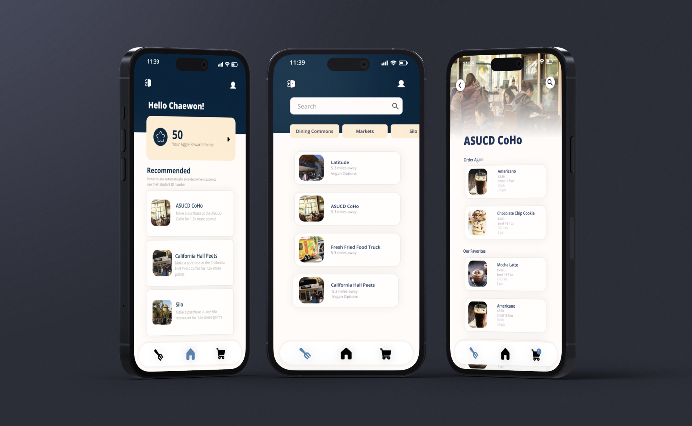
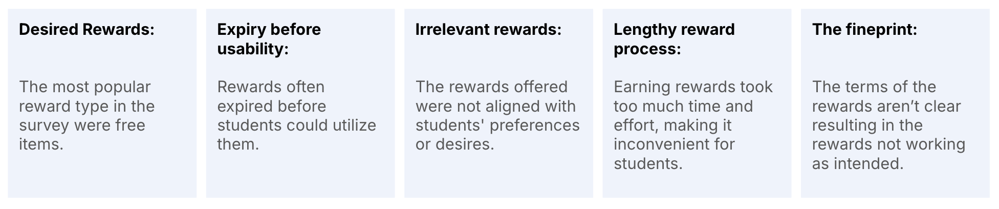
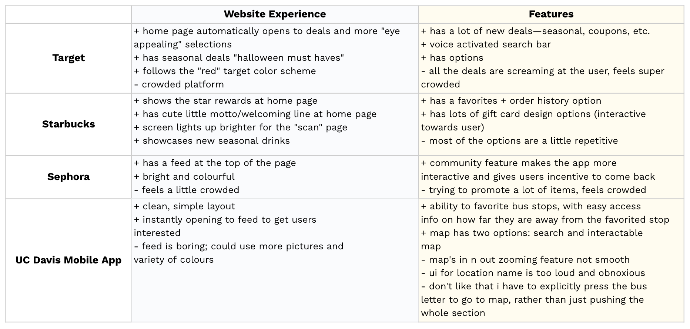
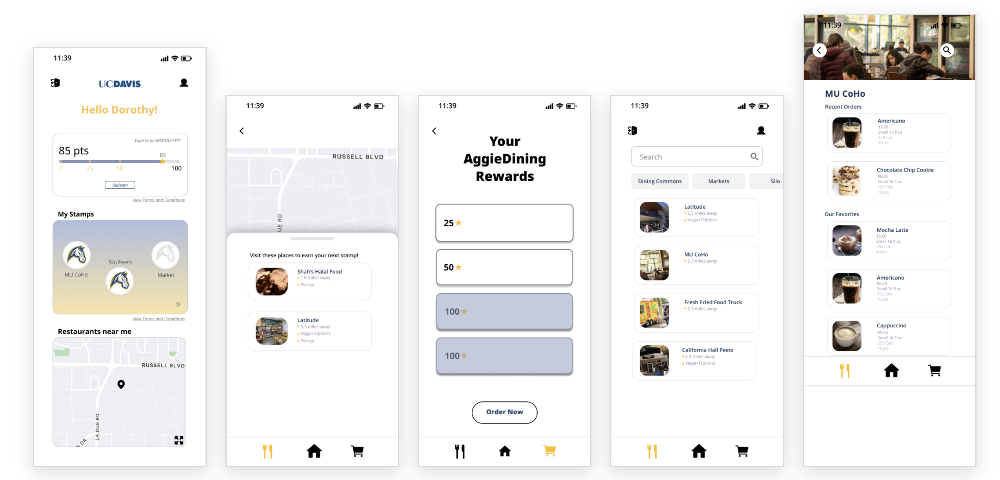
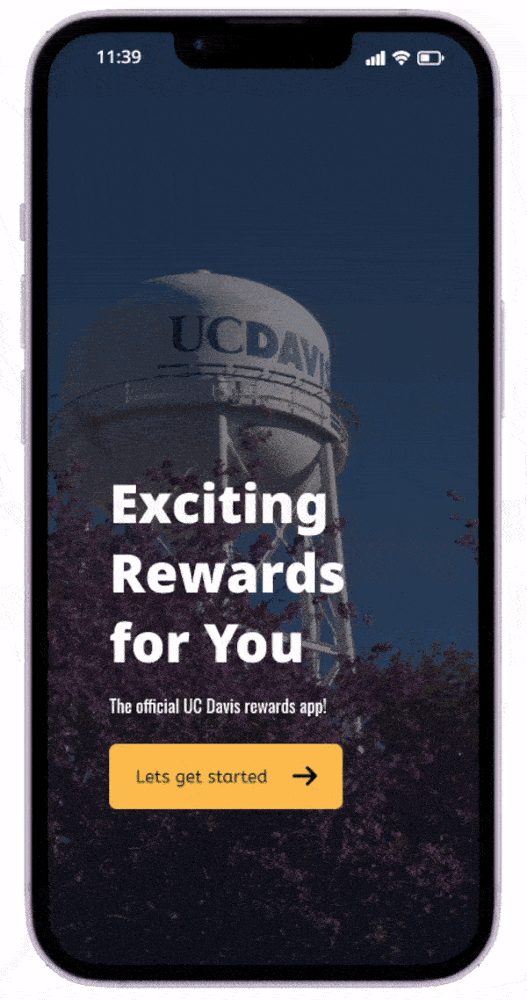
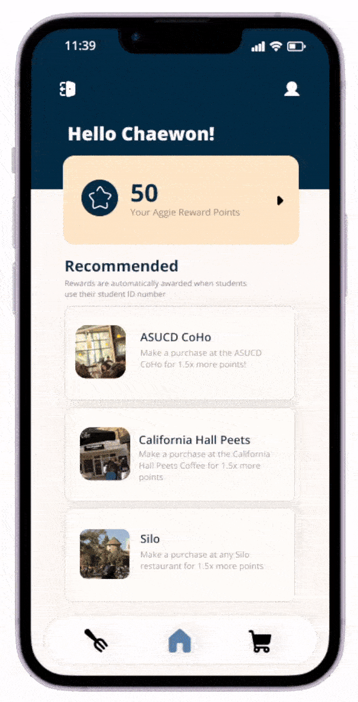
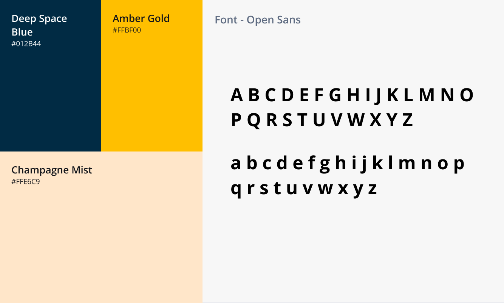

AggieRewards came out of a three-week design challenge on improving the campus dining experience at UC Davis. On-campus food destinations were competing with off-campus options, and nothing gave students a reason to stay.
How might we design a mobile app that enhances the dining experience for UC Davis students by incentivizing and rewarding visiting on-campus food destinations?
Reward systems, after testing showed users couldn't tell the stamp card and points apart.
Our first palette failed WCAG contrast. We rebuilt it around Davis blue and gold and passed.
Most Human-Centered Design at the Design Interactive sprint showcase.
Interviews and a survey turned up two consistent complaints: campus food options feel repetitive, and UC Davis's existing "Aggie Cash" reads as a freshman meal-plan perk rather than something available to everyone. A loyalty program had to widen access, not add another tier.
We audited the programs our survey respondents actually used — Target, Starbucks, Sephora, and the UC Davis mobile app — to see which mechanics people could explain from memory. That turned out to be the important question.


Our mid-fidelity build had both: a stamp card that reset each quarter across three assigned locations, and points that never expired. We thought we were offering variety but the same question kept coming back.

Mid-fi build — points bar and "My Stamps" both live on the home screen.
"Are the stamps and the points the same thing?" They weren't, one reset quarterly, one never expired, but nothing on screen made that legible, and two mechanics doubled the cognitive load for one benefit.
During this discussion, another problem surfaced. If a student disliked one of their three assigned stamp locations, they'd wait a full quarter for a reset that might assign another place they didn't want. That directly contradicted our own research finding that students resent being limited to certain spots. A stamp card only works when it's tied to places you already go.
So we cut the stamp card. A rewards system has to be understandable in one glance, and clarity mattered more than offering two ways to earn.
Removing the stamp card removed the incentive to get students out of their routine and try new campus locations. So we replaced it with recommended locations that refresh periodically and carry a bonus point multiplier if they decide to visit. The incentive to explore stays; the penalty for not wanting to disappears. Every purchase now feeds one balance.
We also caught that our original pastel-blue palette failed contrast checks, so the high-fidelity pass rebuilt it around a deeper Davis blue and a warmer gold. Checkout got clearer state distinctions after a tester couldn't tell the scheduling buttons apart.



Two ways to earn felt generous to us but confusing to everyone else. It's alright to cut features that don't add value.
Our own findings said students hate being restricted. The stamp card restricted them. Always validate features against research findings.
We picked a palette we liked and checked it late. Now contrast is something I test when I pick colors, not after.
Retest the single-points system to confirm it reads as intended, then personalize recommended locations against real dining habits.
last updated august 2026